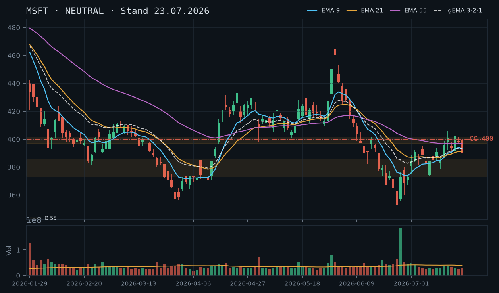
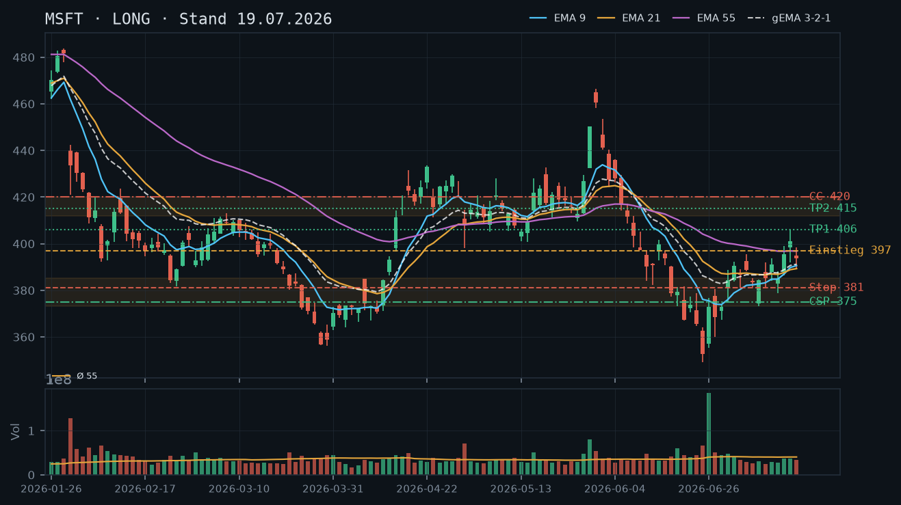
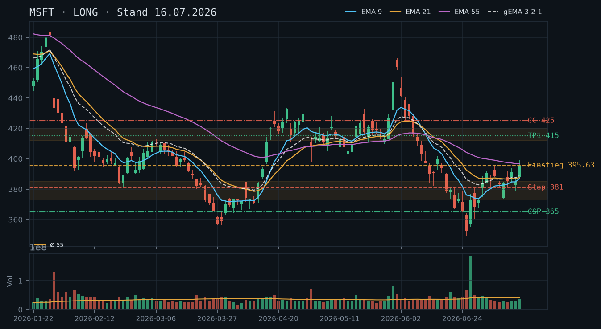
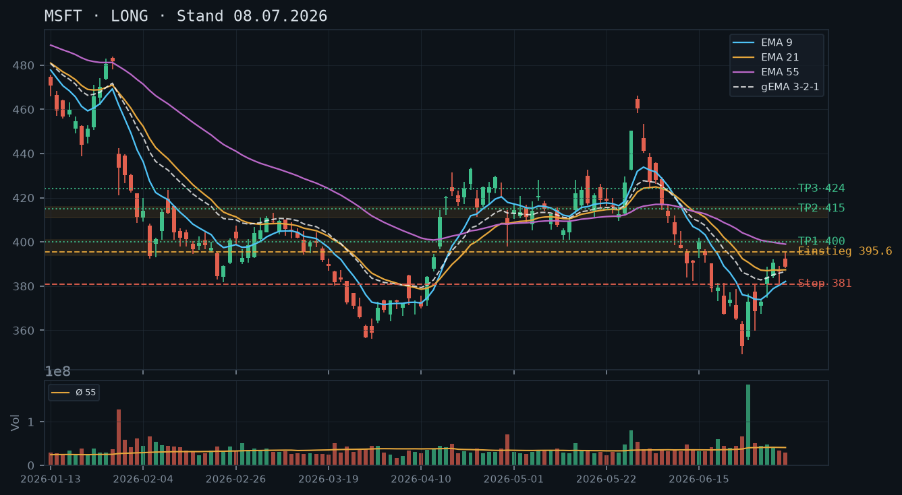

MSFT dreht nach dem Scheitern an der 401-Widerstandszone mit zwei schwachen Kerzen wieder nach unten – der EMA-Verbund komprimiert, der Ausbruch vom 15.07. wird zunehmend in Frage gestellt; kein frisches Long-Setup, Stillhalter-Fokus auf CC zur Risikosteuerung des Bestands.

Die Trendstruktur hat sich gegenüber der Analyse vom 19.07. merklich eingetrübt. Nach dem Ausbruch über EMA55 (Schluss 15.07. bei 395,63) kletterte MSFT bis auf das Intraday-Hoch 405,99 (16.07.), konnte dieses Niveau aber nicht halten. Seitdem zeigt der Kurs eine Sequenz fallender Tageshochs: 405,99 → 403,18 (20.07.) → 401,47 (21.07.) → 401,00 (22.07.). Der Schlusskurs vom 22.07. bei 390,34 liegt bereits wieder unterhalb des EMA55 (396,79) – damit ist der Ausbruch vorerst gescheitert. Der aktuelle IBKR-Kurs von 386,50 (–0,98 % intraday am 23.07.) unterstreicht den Druck weiter. Kritische Support-Level: 385,00–385,31 (kurzfristig, Tageshoch 08.07.), darunter die mehrfach getestete Juli-Konsolidierungszone 373,35–385,31, dann das Cluster 367–373 (Schlusskurse 22./23.06.).
Die letzten drei Tageskerzen sind bärisch. Am 21.07. entstand ein Doji nahe 397,75 mit engem Körper (Open 398,81 / Close 397,75) – Unentschlossenheit direkt unter der 400er-Marke. Am 22.07. folgte eine klar bärische Kerze mit langem Unterwick (Tief 386,96, Schluss 390,34) bei rel. Volumen 0,72 – kein Sell-Off-Volumen, aber ein eindeutiger Richtungswechsel. Der Kursanstieg 15.–20.07. verlief auf unterdurchschnittlichem Volumen (rel. Volumen 0,61–0,92), was den Ausbruch bereits damals als wenig überzeugend auswies. Die aktuelle Schwäche bestätigt diesen Verdacht.
EMA-Reihenfolge per Schlusskurs 22.07.: EMA9 = 393,19, EMA21 = 391,08, EMA55 = 396,79, gema_321 = 393,09. Die Reihenfolge EMA9 > EMA21 aber beide unter EMA55 ist ein Kompressions-Artefakt: Der schnelle EMA9 liegt leicht über EMA21, beide aber unterhalb des trägen EMA55 – kein klares bullisches Alignment. Der gema_321 (393,09) befindet sich ebenfalls unter EMA55 und fällt tendenziell. Der aktuelle IBKR-Kurs 386,50 liegt unterhalb aller drei EMAs und des gema_321 – intraday bärisches Bild. Die Aussage der 19.07.-Analyse ('oberhalb aller drei EMAs') ist damit klar widerlegt.
| Richtung | Kein Trade |
| Einstieg | Kein frisches Setup – abwarten, ob 373–385 als Support hält |
| Stop | – |
| Ziel | – |
| CRV | – |
Der Kurs ist unter EMA55 gerutscht und testet die Juli-Konsolidierungszone von oben. Ein CSP wäre in dieser Situation riskant, da der Support noch nicht erneut bestätigt ist und ein Durchrutschen bis 367–373 denkbar bleibt. Der Covered Call ist das einzig sinnvolle Stillhalter-Geschäft in dieser Lage: Er erzeugt Prämieneinnahmen auf den bestehenden Aktienbestand und definiert einen komfortablen Exit-Level oberhalb des aktuell angeschlagenen technischen Bildes. Ein CSP wird explizit nicht empfohlen, da kein tragfähiger Support mit ausreichendem Puffer vorliegt.
| Geschäft | Covered Call |
| Strike | 400.0 |
| Puffer | 3.5 % |
| Zone | über dem Widerstandscluster 396,79 (EMA55) / 398–401 (Tageshochs 21./22.07. und 16.07.-Schlusskurs) |
| Verfall bis | 2026-08-01 (9 Tage) |
| Begründung | Der 400er-Strike liegt knapp über dem Widerstandscluster 396,79–401,00, das aus dem EMA55, den Tageshochs der letzten drei Sitzungen und dem 16.07.-Schlusskurs (401,10) gebildet wird. Dieser Bereich hat sich dreimal als Deckellevel erwiesen (20.–22.07.) und ist damit als bestätigter Kurzfristwiderstand einzustufen. Der Puffer vom aktuellen IBKR-Kurs (386,50) beträgt rund 3,5 %. Andienung bei 400,00: Ein Verkauf der Aktien bei 400,00 läge über dem aktuellen Kurs, unterhalb des ursprünglichen Kursziels (415,00), wäre aber angesichts des gescheiterten Ausbruchs als Teilgewinn-Mitnahme vertretbar. Mit 300 Aktien im Bestand ist dieser CC vollständig gedeckt (Covered Call, kein Naked Call). Zu prüfen in der Optionskette: Prämie am 400er Strike für den 01.08.-Verfall (angestrebt mind. 2,00 Mid), Delta (angestrebt unter +0,30), Spread-Liquidität. Roll-Trigger aufwärts: Tagesschluss über 401,00 → auf 410er oder 415er (Verfall 01.08.) rollen. Roll-Trigger abwärts: Prämienverfall >70 % → frühzeitig schließen und ggf. neu öffnen. |
Bestand: Aktienbestand MSFT Long vorhanden (300 Aktien), keine offenen Short-Optionen laut IBKR-Snapshot (11:36 Uhr). Der CC auf 400er-Strike ist durch den Bestand vollständig gedeckt. Kein Rollen-Bedarf bestehender Optionen. Sollte MSFT intraday unter 373,35 (unteres Ende der Juli-Konsolidierungszone) schließen, ist die Risiko-Bereitschaft für den Aktienbestand zu überprüfen – ein Stop auf Aktienebene unterhalb 370,00 wäre diskutierbar.
Die Analyse vom 19.07.2026 hatte den Ausbruch über EMA55 als vollständig bestätigt eingestuft. Diese Einschätzung muss per heute explizit verworfen werden. Die Kursentwicklung seitdem zeigt klar: Der Anstieg bis 405,99 (Intraday-Hoch, 16.07.) war nicht nachhaltig. MSFT hat seither eine Serie fallender Hochs gebildet (405,99 → 403,18 → 401,47 → 401,00) und schloss am 22.07. bei 390,34 – wieder unterhalb des EMA55 (396,79).
Der aktuelle IBKR-Kurs von 386,50 (–0,98 % am 23.07., 11:36 Uhr) liegt damit unterhalb aller drei EMAs. Die Juli-Konsolidierungszone 373,35–385,31 (acht Handelstage, 08.–17.07., mehrfach getestet) ist nun das nächste kritische Supportlevel. Ein Schlusskurs darunter würde das gesamte technische Bild der letzten Wochen in Frage stellen.
Konfluenz-Zone Support: 373,35–385,31 (Juli-Konsolidierung, fünffach getestet). Darunter: 367–373 (Schlusskurse 22.–23.06., kurzfristig unbestätigter Bereich). Darunter: 352,83 (Tief 25.06.), dann 349,20 (absolutes Verlaufstief).
Konfluenz-Zone Widerstand: 396,79–401,00 (EMA55 + Tageshochs 20.–22.07.); darüber 405,99–412,00 (16.07.-Hoch + Einstieg in die Mai-Widerstandszone).
Das Dreigestirn der letzten Kerzen ist eindeutig: 20.07. – bullischer Anstieg (Open 391,41, Close 402,29) auf unterdurchschnittlichem Volumen (rel. Volumen 0,69); kein Überzeugungsmoment. 21.07. – Doji / Spinning Top (Open 398,81, Close 397,75, Spanne 396,32–401,47); Unentschlossenheit exakt an der 400er-Marke, Volumen 0,61 – niedrigstes Volumen der gesamten Juli-Erholungsphase. 22.07. – bärische Umkehrkerze (Open 399,58, High 401,00, Low 386,96, Close 390,34); langer Unterwick signalisiert Verkaufsdruck in der oberen Hälfte, Schlusskurs im unteren Drittel der Tagesrange. Volumen 0,72 – kein Panik-Volumen, aber die Richtung ist gesetzt.
Das Muster aus Doji gefolgt von bärischer Kerze ist als klassisches Bearish Engulfing-Äquivalent zu werten, auch wenn das Engulfing nicht vollständig ist. In Kombination mit dem gescheiterten Widerstandstest bei 401,00 stärkt dies den Bären-Case kurzfristig.
Per Schlusskurs 22.07.: EMA9 = 393,19, EMA21 = 391,08, EMA55 = 396,79, gema_321 = 393,09. Die Situation ist als Kompressions-Artefakt zu klassifizieren: EMA9 liegt über EMA21, beide aber unter EMA55 – eine ungeordnete Reihenfolge ohne klares bullisches oder bärisches Alignment. Der gema_321 fällt leicht. Wichtig: Der aktuelle Kurs (386,50 intraday) liegt unterhalb aller vier Indikatoren. Das ist das erste Mal seit dem Ausbruch am 15.07., dass diese Konstellation eintritt. Die Distanz EMA9 zu EMA55 beträgt nur noch ca. 3,60 Punkte – die EMAs werden sich in den nächsten Tagen schneiden, was weitere Unsicherheit signalisiert.
Setup A (kein Trade – präferiert): Abwarten bis zur Klärung. Hält die Juli-Konsolidierungszone 373–385 als Support? Oder bricht MSFT darunter? In der aktuellen Kompression ohne klares Signal ist Kapitalerhalt wichtiger als Aktivismus.
Setup B (Long – konditional): Frisches Long-Setup nur bei einem Tagesschluss über 401,00 mit Volumen >1,0x Schnitt. Einstieg: 401,50 (Stop-Buy). Stop: 385,00 (unter der Juli-Konsolidierungszone). Ziel 1: 412,00 (EW zur Mai-Zone), CRV ca. 0,6:1 – zu gering. Ziel 2: 420,00 (oberes Ende Mai-Zone), CRV ca. 1,2:1 – grenzwertig. Dieses Setup ist aktuell nicht aktiviert und bietet kein attraktives CRV.
Setup C (Short – spekulativ): Nur für Trader ohne Aktienbestand relevant. Einstieg: Tagesschluss unter 373,35 (unteres Ende Juli-Konsolidierung). Stop: 385,50. Ziel: 352,83 (25.06.-Tief). CRV ca. 1,8:1. Nicht vereinbar mit dem bestehenden Long-Bestand – wird daher nicht weiterverfolgt.
Zonen-Herleitung: Das Widerstandscluster 396,79–401,00 setzt sich zusammen aus: (1) EMA55 aktuell bei 396,79, (2) Schlusskurs 16.07. bei 401,10 – letztes bullisches Momentum-Hoch, (3) Tageshoch 22.07. bei 401,00 – dreifacher Deckel. Der 400er-Strike liegt exakt an der Oberkante dieses Clusters. Jeder Anstieg bis 400,00 wäre technisch ein Test des Widerstands; ein Durchbruch darüber würde das Cluster entwerten. Der Puffer vom aktuellen IBKR-Kurs (386,50) beträgt +3,5 %.
Andienungsszenario: Werden die 300 Aktien bei 400,00 abgerufen, entspricht das einem Verkauf über dem aktuellen Kurs, über dem EMA55, aber unterhalb des ursprünglichen Kursziels (415,00). Angesichts des gescheiterten Ausbruchs und der eingetrübten Trendstruktur ist das ein akzeptabler, ja sogar komfortabler Exit. Die ursprüngliche Long-These (Ziel 415,00) verliert mit dem erneuten Unterschreiten von EMA55 an Überzeugungskraft.
Roll-Trigger aufwärts: Schlusskurs über 401,00 mit rel. Volumen >1,0 → CC auf 410er oder 415er rollen (Verfall 01.08. beibehalten oder auf 08.08. ausweiten, sofern max. 12 Tage). Damit wird Upside nicht unnötig gekappt. Roll-Trigger abwärts / Schließen: Prämie fällt auf <30 % des Eröffnungswertes → Position frühzeitig mit Gewinn schließen, neu bewerten.
Was in der Optionskette zu prüfen ist: Prämie am 400er Call für den 01.08.-Verfall (angestrebt mind. 2,00–2,50 Mid bei aktuellem Kurs 386,50); Delta (angestrebt unter +0,30, idealerweise +0,20–0,25); Bid-Ask-Spread als Liquiditätsindikator. Kein IBKR-Snapshot mit Optionsdaten vorhanden – manuelle Prüfung notwendig.
Ein CSP setzt voraus, dass ein tragfähiger Support mit ausreichendem Puffer identifiziert werden kann. Die Juli-Konsolidierungszone (373–385) wird aktuell von oben getestet – sie ist noch nicht neu bestätigt. Ein Strike unter dieser Zone (z.B. 365er) würde zwar Puffer bieten (ca. 5,6 % unter aktuellem Kurs), aber die Prämie dürfte bei 9 Tagen Restlaufzeit und so weit OTM gering sein. Wichtiger: Kombiniert mit einem bestehenden Long-Aktienbestand würde ein CSP die Gesamtexposure gegenüber MSFT ausweiten – in einer Situation, in der der Trend unklarer geworden ist. Qualität vor Vollständigkeit: CSP wird nicht empfohlen.
Der CC aus der 19.07.-Analyse (420er-Strike, Verfall 25.07.) wäre – sofern eröffnet – inzwischen weit im Geld wert wenig, da der Kurs nie nachhaltig über 405,99 gestiegen ist. Ein 420er-Call mit Verfall 25.07. (morgen!) notiert bei aktuellem Kurs 386,50 nahezu wertlos – ideale Situation zum Schließen mit Maximalgewinn und Neupositionierung (→ 400er, Verfall 01.08.). Der CSP aus der 19.07.-Analyse (375er, Verfall 25.07.) wäre bei aktuellem Kurs 386,50 noch nicht im Geld, aber der Puffer von ursprünglich 6,5 % ist auf ca. 3,0 % geschrumpft. Falls dieser noch offen wäre, wäre ein Roll auf 365er, Verfall 01.08. zu prüfen. Laut IBKR-Snapshot sind jedoch keine offenen Optionen vorhanden – kein Rollen-Bedarf.
MSFT hat den EMA55-Widerstand (396,76 aus der Voranalyse) klar überwunden und notiert auf Wochenschluss-Basis oberhalb aller drei EMAs – der Long-Trigger vom 08.07. ist vollständig bestätigt, Ziel 415 bleibt primär.

Die Trendstruktur hat sich seit der letzten Analyse vom 16.07. deutlich verbessert: MSFT schloss am 15.07. bei 395,63 (knappes Auslösen des Long-Triggers), am 16.07. bei 401,10 und am 17.07. bei 393,82. Der EMA55 lag zuletzt bei 396,81 (17.07.) – der Kurs hat ihn nach oben durchbrochen und sich zunächst darüber etabliert, bevor er am 17.07. leicht darunter zurückfiel. Wichtige Levels: Unterstützung Juli-Konsolidierung 373–385, frisches Zwischenhoch 405,99 (16.07.), Zielzone Mai-Widerstand 412–420. Der Trend zeigt steigende Hochs und Tiefs seit dem Verlaufstief 349,20 (25.06.).
Die letzten drei Kerzen zeichnen ein differenziertes Bild: 15.07. bullische Marubozu-artige Kerze (+10,70 Punkte, rel. Volumen 0,90 – leicht über Schnitt), 16.07. weitere bullische Kerze mit neuem Hoch bei 405,99 (rel. Volumen 0,92), 17.07. Pullback-Kerze mit kleinem Real Body (Schluss 393,82, rel. Volumen 0,82) – diese Kerze schließt leicht unter dem EMA55 (396,81) und deutet kurzfristige Konsolidierung an. Kein bearishes Umkehrmuster, aber der Pullback mahnt zur Aufmerksamkeit; der Support bei 389–390 (EMA9/EMA21-Verbund) wird nun getestet.
EMA9 (390,61), EMA21 (389,31), EMA55 (396,81) per 17.07. – die Reihenfolge EMA9 > EMA21, aber beide unter EMA55 ist ein Kompressions-Artefakt der langen Abwärtsphase; der Kurs notiert aktuell zwischen EMA21/EMA9-Cluster und EMA55. Der gema_321-Verbund (391,21) zeigt eine leichte Aufwärtsneigung. Positiv: Alle drei EMAs drehen erstmals seit Mai wieder aufwärts. Kritisch: Kurs schloss am 17.07. (393,82) unter EMA55 – ein Tagesschluss über 396,81 bleibt der entscheidende Bestätigungsfilter für neue Einstiege.
| Richtung | Long |
| Einstieg | 396,90 (Stop-Buy über EMA55 von 396,81 – Tagesschluss-Bestätigung oder Intraday-Breakout über 16.07.-Hoch 405,99 als aggressivere Variante) |
| Stop | 381,00 (unverändert, unter der Juli-Konsolidierungszone 373–385) |
| Ziel | 415,00 (primär, Mai-Widerstandszone 412–420) |
| CRV | 1.1 : 1 (konservativ ab EMA55-Trigger) / 2.3 : 1 (ab Ausbruch über 405,99) |
Mit 300 Aktien im Bestand ist ein Covered Call voll gedeckt (3 Kontrakte möglich) und klar das attraktivere Geschäft in dieser Konstellation. Der CSP bietet sich ergänzend als defensives Einkommens-Instrument an, sofern der Puffer zur Juli-Konsolidierungszone ausreichend erscheint. Da kein bestehender Short-Put ausläuft, besteht kein Rollen-Bedarf.
| Geschäft | Cash-Secured Put |
| Strike | 375.0 |
| Puffer | 6.5 % |
| Zone | unter der mehrfach getesteten Juli-Konsolidierungszone 373,35–385,31 (08.–14.07.) |
| Verfall bis | 2026-07-25 (6 Tage) – nächster Standard-Freitag; alternativ 2026-08-01 (13 Tage, leicht über Limit) → präferiert 2026-07-25 |
| Begründung | Der 375er-Strike liegt klar unterhalb der gesamten, fünffach getesteten Juli-Konsolidierungszone (373,35–385,31). Gegenüber der Voranalyse (365er, Puffer 7,7%) wurde der Strike um 10 Punkte angehoben, da der Kurs inzwischen klar nach oben ausgebrochen ist und die Zone nun als valider Support gilt. Ein 375er-Put befindet sich ~6,5% unter dem aktuellen Kurs (401,10). Andienung bei 375,00 wäre ein Einstieg mitten in die Juli-Konsolidierungszone – technisch vertretbar, da dort mehrfach Käufer aufgetreten sind. Zu prüfen: Prämie im Verhältnis zum 6,5%-Puffer, Delta (angestrebt <-0,20), Liquidität am 375er Strike für den 25.07.-Verfall. |
| Geschäft | Covered Call |
| Strike | 420.0 |
| Puffer | 4.7 % |
| Zone | über der Mai-Widerstandszone 412–420 (26./27.05. – Hochs 428,17 / 432,70 / 450,33) |
| Verfall bis | 2026-07-25 (6 Tage) |
| Begründung | Der 420er-Strike liegt am oberen Ende der Mai-Widerstandszone und rund 4,7% über dem aktuellen Kurs. Gegenüber der Voranalyse (425er, Puffer 7,4%) wurde der Strike konservativ abgesenkt, da der Kurs näher an die Zone herangerückt ist und ein 425er bei nur noch 6 Tagen Restlaufzeit kaum nennenswerte Prämie generieren dürfte. Andienung bei 420,00 entspricht dem oberen Ende der Zielzone der Long-These – ein Exit dort wäre komfortabel. WICHTIG: Mit 300 Aktien im Bestand ist dieser CC vollständig gedeckt (Covered Call, kein Naked Call). Roll-Trigger: Tagesschluss über 415,00 mit erhöhtem Volumen → dann auf 430er oder 435er rollen (nächster Verfallstermin). Zu prüfen: Prämie (angestrebt mind. 1,50 Mid), Delta (angestrebt <+0,25), Spread-Liquidität am 420er. |
Bestand: Aktienbestand MSFT vorhanden (Long). Keine offenen Short-Optionen, daher kein Rollen-Bedarf. Der Covered Call auf 420er-Strike ist durch den Bestand vollständig gedeckt. Sollte MSFT über 415,00 schließen (Zielzone annähern), ist ein proaktives Rollen des CC auf höheren Strike (430–435, Verfall 01.08.) zu prüfen, um Upside nicht unnötig zu kappen.
Die Analyse vom 08.07. setzte einen Long-Trigger bei 395,60 (Stop-Buy über Tageshoch 395,57). Dieser wurde laut Vorlage vom 16.07. am 15.07. knapp ausgelöst (Schluss 395,63). Die aktuelle Datenlage bestätigt diesen Befund: Der 15.07. schloss bei 395,63, der 16.07. bei 401,10 – damit ist der Long-Trigger vollständig und klar bestätigt. Die Vorbehalte der 16.07.-Analyse ("Ausbruch noch nicht klar bestätigt", "Tagesschluss über EMA55 abwarten") sind durch den Schluss vom 16.07. bei 401,10 (über EMA55 von damals ~396,76) erfüllt. Der Rücksetzer am 17.07. auf 393,82 (leicht unter EMA55 396,81) ist als normaler Pullback einzustufen und invalidiert die Long-These nicht, solange 381,00 (Stop) hält.
MSFT befindet sich in einer Erholungsbewegung vom Verlaufstief 349,20 (25.06., rel. Volumen 1,77). Die Struktur zeigt seitdem steigende Hochs und Tiefs: Tief 349,20 → Zwischenhoch 392,20 (02.07.) → Tief 373,35 (09.07.) → Hoch 405,99 (16.07.) – klassische Aufwärtsstruktur in der Erholung.
13.07. (390,99, rel. Vol. 0,72): Bullische Kerze nach Konsolidierung, moderate Reichweite, unterdurchschnittliches Volumen – kein starkes Momentum-Signal.
14.07. (384,93, rel. Vol. 0,69): Rücksetzer mit niedrigem Volumen – Pullback ohne Verkaufsdruck, positiv zu werten.
15.07. (395,63, rel. Vol. 0,90): Starke bullische Kerze (+10,70 Punkte), überschreitet Long-Trigger 395,60. Volumen noch leicht unter Schnitt – kein explosiver Ausbruch, aber solide.
16.07. (401,10, rel. Vol. 0,92): Weiterer Anstieg, Intraday-Hoch 405,99. Schlusskurs zieht sich von Tageshoch zurück – leicht bärische Intraday-Dynamik, aber Schluss über 400 ist positiv.
17.07. (393,82, rel. Vol. 0,82): Pullback-Kerze, schließt leicht unter EMA55 (396,81). Kein bearishes Umkehrmuster (keine Shooting Star, kein Engulfing). Volumen unterdurchschnittlich – Pullback ohne Distribution.
Per 17.07.: EMA9 = 390,61 / EMA21 = 389,31 / EMA55 = 396,81 / gema_321 = 391,21.
Die Reihenfolge EMA9 > EMA21, aber beide unter EMA55, ist ein klassisches Kompressions-Artefakt der vorangegangenen Abwärtsbewegung: Der EMA55 reagiert langsamer und liegt noch über den schnelleren EMAs, obwohl der Kurs sich erholt. Dieser Zustand ist typisch in frühen Erholungsphasen und kein Widerspruch zur Long-These. Entscheidend: Der gema_321-Verbund (391,21) dreht nach oben – das ist das früheste bullische Signal auf Verbund-Ebene. Ein Golden Cross EMA9/EMA21 über EMA55 würde die Bestätigung komplettieren; das ist bei Fortsetzung der Erholung in 1–2 Wochen möglich.
Kritischer Filter: Tagesschluss über EMA55 (396,81) als Trigger für neue Einstiege. Am 16.07. erfüllt (401,10), am 17.07. nicht erfüllt (393,82) – der Pulllback zur EMA55 ist als Retest einzustufen, nicht als Breakdown.
Setup A – Konservativ (bevorzugt): Einstieg per Stop-Buy bei 397,00 (Tagesschluss über EMA55), Stop 381,00, Ziel 1: 406,00 (CRV 0,6:1), Ziel 2: 415,00 (CRV 1,1:1). Für Anleger, die bereits im Trade sind (Trigger 395,60 ausgelöst), ist Ziel 415 weiterhin gültig.
Setup B – Aggressiv: Einstieg per Stop-Buy bei 406,10 (Ausbruch über Tageshoch 16.07. bei 405,99), Stop 388,00 (unter Intraday-Tief 16.07. 392,05), Ziel 415,00 (CRV 0,5:1) / Ziel 420,00 (CRV 0,8:1). Schlechteres CRV, aber klare Bestätigung des Ausbruchs.
Setup C – Eskalation bei Stärke: Falls MSFT die 420er-Zone (Mai-Widerstand) mit Volumen überwindet (rel. Volumen > 1,5), wäre eine Anschluss-Long-Position mit neuem Ziel 432–435 (Mai-Hochs) denkbar. Derzeit noch keine Handlungsempfehlung – Monitoring.
Der Snapshot vom 19.07.2026, 12:08 Uhr zeigt einen Kurs von 401,10 und einen Aktienbestand. Es bestehen keine offenen Short-Optionen – kein Rollen-Bedarf. Der Covered Call ist mit dem vorhandenen Aktienbestand vollständig gedeckt (100 Aktien je Kontrakt). Der Snapshot-Zeitstempel liegt am Analysetag, ist also aktuell; keine zeitlichen Einschränkungen.
Zonen-Herleitung: Die Mai-Widerstandszone 412–420 ist die dominante Schranke für die aktuelle Erholungsbewegung. Sie wurde gebildet durch: Hoch 26.05. (428,17), Tief 27.05. (412,91), multiple Schlusskurse in diesem Bereich. Das obere Ende der Zone (420,00) stellt den technisch saubersten Strike dar: Er liegt am Rand der Zone, bietet den Aktienkäufer einen Puffer von 4,7% (401,10 → 420,00 = +18,90 Punkte), und eine Andienung dort wäre technisch wünschenswert – man gibt die Position am oberen Widerstand ab, also genau dort, wo auch Direktinvestoren Gewinne mitnehmen würden.
Andienungsszenario: Wird MSFT bei 420,00 abgerufen, entspricht das einem Gewinn von ~18,90 Punkte auf den aktuellen Kurs plus vereinnahmte Prämie. Das ist in der aktuellen Marktstruktur ein sehr akzeptabler Exit und übertrifft das primäre Long-Ziel (415,00) leicht. Kein Widerspruch zur Long-These – der CC begrenzt nur den Upside über 420 hinaus.
Roll-Trigger: Tagesschluss über 415,00 mit rel. Volumen > 1,3 → proaktives Rollen auf 430er oder 435er, Verfall 01.08.2026. Bei einem Kurs über 420,00 zur Verfalltag: entweder Andienung akzeptieren oder auf deutlich höheren Strike (435+) für den übernächsten Freitag rollen – nur wenn die Long-These noch intakt ist.
Optionskette prüfen: Prämie angestrebt mind. 1,50 Mid (sonst Risiko-Prämien-Verhältnis unattraktiv), Delta angestrebt unter +0,25, Bid-Ask-Spread unter 0,15 für akzeptable Liquidität. Open Interest am 420er für den 25.07. sollte > 200 sein.
Zonen-Herleitung: Die Juli-Konsolidierungszone 373,35–385,31 wurde zwischen dem 08.07. und 14.07. fünfmal getestet und jedes Mal verteidigt (Tiefs: 381,33 / 373,35 / 381,50 / 384,15 / 378,65). Der 375er-Strike liegt bewusst in der Mitte dieser Zone – er hat die gesamte obere Hälfte der Zone als Puffer vor sich und liegt nur 2 Punkte über dem absoluten Zonentief (373,35). Gegenüber der Voranalyse (365er) wurde der Strike angehoben, weil die Zone jetzt als bestätigter Support gilt und ein 365er nur noch minimale Prämie bei erhöhtem Puffer bieten würde.
Andienungsszenario: Eine Andienung bei 375,00 würde bedeuten, dass MSFT die gesamte Juli-Konsolidierungszone nach unten gebrochen hat (Kurs unter 373,35). In diesem Fall wäre das ein negatives technisches Signal – der Stop der Long-Position (381,00) wäre bereits ausgelöst worden. Ein Einstieg über den Put bei 375,00 wäre dann kein Qualitätseinstieg, sondern ein erzwungener Kauf in einem beschädigten Chart. Daher Einschränkung: Dieser CSP sollte nur dann verkauft werden, wenn die primäre Long-Position bereits aus dem Trade ist (Stop ausgelöst) oder als reine Einkommens-Strategie mit Bereitschaft zur Aktienübernahme unter der Konsolidierungszone. Der Puffer von 6,5% ist bei 6 Tagen Restlaufzeit großzügig – die Prämie wird entsprechend moderat sein.
Optionskette prüfen: Delta angestrebt unter -0,15 (geringer Andienungsdruck), Prämie im Verhältnis zum Puffer bewerten; bei unter 0,50 Mid ist das Risiko-Ertrags-Verhältnis für einen CSP unattraktiv. Liquidität: Open Interest > 100 für den 375er am 25.07.
Heutiges Datum: 19.07.2026 (Samstag). Nächster Standard-Verfall: 25.07.2026 (Freitag, 6 Tage) – dieser liegt klar innerhalb des 12-Tage-Limits und ist der präferierte Verfall für beide Setups. Der übernächste Freitag (01.08.2026, 13 Tage) liegt leicht über dem 12-Tage-Limit und kommt nur für Roll-Szenarien in Frage.
Der Long-Trigger vom 08.07. (395,60) wurde erst am 15.07. – und dann nur knapp – ausgelöst, mit Schlusskurs 395,63 direkt am EMA55-Widerstand (396,76). Das Setup ist damit technisch aktiv, aber der Ausbruch ist noch nicht klar bestätigt; Ziel 415,00 bleibt unverändert gültig.

Nach dem starken Ausverkauf von 460,52 (01.06.) auf 349,20 (25.06., Tief außerhalb dieses Zeitraums nicht relevant für die Vorlage) erholte sich MSFT in eine mehrwöchige Konsolidierung 373,35–396,00 (Ende Juni bis Mitte Juli). Der ursprüngliche Trigger 395,60 wurde am 15.07. mit einem starken Tagesabschluss (395,63, Hoch 398,96) erreicht – allerdings exakt an der Stelle, wo EMA55 (396,76) aktuell als Widerstand liegt. Der Ausbruch ist damit eingeleitet, aber noch nicht überzeugend bestätigt.
13.07.: Erholungskerze, Schluss 390,99. 14.07.: Pullback, Schluss 384,93 – fünfter Test der Konsolidierungszone binnen einer Woche. 15.07.: starke grüne Kerze, Eröffnung 387,80, Hoch 398,96, Schluss 395,63 nahe dem Hoch – der Trigger wurde erreicht, aber der Schlusskurs liegt noch knapp unter EMA55, kein klarer Durchbruch mit Sicherheitsabstand.
Ungewöhnliche, aber erklärbare Lage: EMA9 (386,98) < EMA21 (387,64) < gema_321 (388,83) < EMA55 (396,76) – EMA55 liegt oberhalb der kurzfristigen EMAs, weil sie die höheren Kurse vor dem Juni-Ausverkauf noch nachzieht. Der Kurs (395,63) testet EMA55 exakt von unten – ein klassischer Entscheidungspunkt: Ein nachhaltiger Schluss darüber wäre ein starkes Trendwende-Signal, ein Scheitern würde eher für eine weitere Konsolidierungsrunde sprechen.
| Richtung | Long |
| Einstieg | Bereits ausgelöst am 15.07. bei 395,60 (knapp, Schluss direkt am EMA55-Widerstand); für Zukäufe: Bestätigung durch einen Tagesschluss über EMA55 (396,76) abwarten |
| Stop | 381,00 (unverändert, unter der gesamten Juli-Konsolidierung 373,35–396,00) |
| Ziel | 415,00 (unverändert aus der Vorlage, Mai-Widerstandszone 412–420) |
| CRV | 1,3 : 1 (auf Basis des Trigger-Kurses 395,63) |
Die fünffach getestete Juli-Konsolidierungszone 373,35–385,31 ist ein solides CSP-Fundament. Für einen CC bietet sich die Mai-Zone 412–420 an, die zugleich mit dem Kursziel der Vorlage übereinstimmt – ein Anstieg darüber hinaus würde die gesamte technische These bereits übertreffen.
| Geschäft | Cash-Secured Put |
| Strike | 365.0 |
| Puffer | 7.7 % |
| Zone | unter der fünffach getesteten Juli-Konsolidierungszone 373,35–385,31 (08.–14.07.) |
| Verfall bis | 2026-07-24 (8 Tage) |
| Begründung | Strike liegt klar unter der gesamten, in der letzten Woche mehrfach verteidigten Zone. Andienung bei 365,00 wäre ein Einstieg unter der kompletten Konsolidierungsphase, aber noch deutlich über dem eigentlichen Verlaufstief 349,20 – im Falle einer Rückkehr zur Konsolidierung strukturell vertretbar. Prüfen: Prämie im Verhältnis zum 7,7%-Puffer, Liquidität am 365er. |
| Geschäft | Covered Call |
| Strike | 425.0 |
| Puffer | 7.4 % |
| Zone | über der Mai-Widerstandszone 412–420 (26./27.05.), die auch dem Kursziel der Vorlage entspricht |
| Verfall bis | 2026-07-24 (8 Tage) |
| Begründung | Strike liegt über dem eigentlichen Kursziel der Long-These – ein Anstieg von 7,4% binnen 8 Tagen würde bedeuten, dass das technische Ziel bereits übertroffen wurde. Andienung bei 425,00 wäre in diesem Szenario ein sehr komfortabler Exit oberhalb der ursprünglichen Zielzone. Prüfen: Prämie im Verhältnis zum 7,4%-Puffer, Liquidität am 425er; Rollentrigger wäre ein Tagesschluss über 415,00 mit Volumen. |
Zwischen der Vorlage vom 08.07. und heute testete der Kurs die Konsolidierungszone 373–396 gleich fünfmal (08., 09., 10., 13., 14.07.), bevor am 15.07. der Ausbruch mit Schluss 395,63 gelang – nur 0,03 Punkte über dem Trigger 395,60. Das ist technisch ein gültiger Trigger, aber mit denkbar wenig Sicherheitsabstand.
Ungewöhnlich an der aktuellen EMA-Lage: EMA55 (396,76) liegt über den kurzfristigeren EMAs, da sie noch die höheren Kurse vor dem Juni-Ausverkauf abbildet. Der Kurs testet sie exakt von unten. Das ist keine Anomalie im Sinne eines Kompressions-Artefakts, sondern eine typische Situation nach einem scharfen Sell-off mit anschließender Erholung: Die langsame EMA muss erst 'eingeholt' werden. Ein klarer Tagesschluss darüber (statt nur ein knapper Trigger-Touch) wäre die eigentliche Bestätigung des Trendwechsels.
Formal ist die Long-These aktiv, das Chance-Risiko-Verhältnis zum unveränderten Ziel 415,00 liegt bei 1,3:1 – solide, aber nicht überragend, was den knappen, noch unbestätigten Charakter des Ausbruchs widerspiegelt. Konservativere Alternative: Zukauf erst nach einem Tagesschluss klar über 396,76 (EMA55) abwarten, um das Risiko eines False Breaks zu reduzieren.
CSP bei 365,00 (7,7% Puffer): Basiert auf der fünffach getesteten Julizone – eines der am besten abgesicherten Fundamente dieser Serie. CC bei 425,00 (7,4% Puffer): Liegt bewusst über dem eigentlichen Kursziel 415,00 der Long-These – wird dieser Strike erreicht, hat sich die technische Prognose bereits mehr als erfüllt, ein komfortabler Punkt für eine Gewinnmitnahme via Andienung. Rollentrigger CSP: Tagesschluss unter 373,00. Rollentrigger CC: Tagesschluss über 415,00 mit Volumen. Zu prüfen in der Optionskette: Prämien im Verhältnis zu den jeweiligen Puffern, insbesondere angesichts der Unsicherheit rund um den knappen EMA55-Test.
Die Long-These vom 08.07. wird formal bestätigt (Trigger erreicht), allerdings mit deutlich weniger Überzeugungskraft als ein klarer Ausbruch nahelegen würde – der Schlusskurs liegt praktisch exakt am EMA55-Widerstand, nicht klar darüber. Ziel und Stop bleiben unverändert.
MSFT erholt sich nach starkem Ausverkauf mit steigendem Momentum, EMA-Verbund dreht nach oben – Long-Setup über Widerstand 395 mit Ziel 415.

Nach dem Hochpunkt bei ~466 (01.06.26) durchlief MSFT eine ausgeprägte Abwärtsbewegung bis auf das Tief 349,20 (25.06.26). Seitdem zeigt der Kurs höhere Tiefs (349 → 360 → 367 → 374) und beginnt, höhere Hochs auszubilden (376 → 388 → 395). Die übergeordnete Trendstruktur ist noch bärisch (Kurs unter EMA21/55), kurzfristig dreht sich das Bild aber bullisch.
Die letzte Kerze (07.07.) zeigt einen Aufwärtstag mit Schlusskurs 388,84 bei niedrigem Volumen (rel. 0,72) – kein starkes Kaufsignal, aber kein Verkaufsdruck. Der massive Volumentag am 26.06. (rel. 4,63!) markiert einen Kapitulationscandle als potenziellen Boden. Seither folgen vier aufeinanderfolgende höhere Schlusskurse, was Käuferstärke signalisiert.
EMA9 (382,13) < EMA21 (387,40) < EMA55 (399,00) – klassische Bären-Reihenfolge, aber EMA9 nähert sich EMA21 von unten an. gema_321 bei 386,70 dreht leicht nach oben. Kurs (388,84) handelt erstmals seit Wochen über gema_321 und EMA21 – ein bullisches Signal der Trendwende.
| Richtung | Long |
| Einstieg | 395.60 (Stop-Buy über Tageshoch 395,57) |
| Stop | 381.00 |
| Ziel | 415.00 |
| CRV | 2.6 : 1 |
MSFT befand sich seit dem Jahreshoch bei ~466 USD (01.06.2026) in einem klaren Abwärtstrend. Die Abwärtsbewegung beschleunigte sich Mitte Juni mit einer Abfolge fallender Hochs und Tiefs: Hochs bei 466 → 441 → 429 → 401 → 396 → 381 und Tiefs bei 458 → 440 → 424 → 414 → 384 → 349.
Das Jahrestief wurde am 25.06.2026 bei 349,20 USD erreicht. Seitdem zeigt die Kursstruktur eine Bodenbildung: Höhere Tiefs bei 349,20 → 359,90 (29.06.) → 367,45 (30.06.) → 374,89 (01.07.) → 381,22 (06.07.) → 388,22 (07.07.). Gleichzeitig entstehen höhere Hochs: 380,50 → 388,83 → 392,20 → 389,15 → 395,57. Damit ist kurzfristig ein Aufwärtstrend etabliert. Der übergeordnete Trend (Wochen-Perspektive) bleibt aber noch bärisch, da der Kurs deutlich unter EMA21 und EMA55 notiert.
Wichtige Widerstandslevels: 395-396 (kurzfristig, früheres Support-Cluster März), 400-401 (EMA55 + psychologisch runde Zahl), 411-415 (Konsolidierungszone Mai), 420-424 (April-Hochs). Wichtige Supportlevels: 381-383 (gema_321, EMA21), 373-375 (früheres Widerstandsband Juni/Juli), 365-367 (Swing-Tief 22.06.), 349 (absolutes Tief).
Der entscheidende Wendepunkt war der 26.06.2026: Ein massiver Volumentag (186 Mio. Stück, rel_volumen = 4,63 – mehr als das Vierfache des 55-Tage-Schnitts!) mit einer langen unteren Lunte. Eröffnung bei 357,15, Tief bei 355,43, Schluss jedoch bei 372,97 – das ist ein klassischer Hammer/Capitulation-Candle, der häufig Bodenformationen markiert.
In der Folgewoche sehen wir fünf aufeinanderfolgende bullische Kerzen oder zumindest neutrale Kerzen mit höheren Schlusskursen. Die letzte Kerze vom 07.07. (open 392,49, high 395,57, low 388,22, close 388,84) zeigt einen bärischen Innenbar bzw. leichten Rücksetzer nach dem Hochausbruchsversuch – das Volumen war mit rel. 0,72 aber sehr niedrig, was darauf hindeutet, dass der Rücksetzer nicht von echtem Verkaufsdruck getragen wurde. Ein bullisches Pullback in die Unterstützungszone oder ein erneuter Ausbruchsversuch über 395,57 wären die nächsten Trigger.
Auffällig: Der 01.07. und 02.07. zeigen jeweils rel_volumen > 1,0 mit bullischen Körpern – Bestätigung des Kaufinteresses. Am 29.05. und 01.06. gab es ebenfalls überdurchschnittliche Volumina, jedoch nach unten – die Bullen scheinen die Initiative langsam zurückzugewinnen.
EMA-Reihenfolge (07.07.2026): EMA9 = 382,13 | EMA21 = 387,40 | EMA55 = 399,00 – noch klassische Bären-Reihenfolge (EMA9 unter EMA21 unter EMA55). Der gema_321 liegt bei 386,70.
Positiv zu werten: Der Schlusskurs (388,84) handelt erstmals seit Wochen über EMA21 (387,40) und gema_321 (386,70). EMA9 nähert sich EMA21 von unten an – ein bullisches Kreuzungssignal (Golden Cross EMA9/EMA21) scheint in den nächsten 2-3 Tagen wahrscheinlich, wenn der Kurs weiter steigt. EMA55 bei 399,00 ist der nächste große Widerstand.
Verlauf des gema_321: Der gewichtete Verbund dreht seit 01.07. leicht nach oben (380,39 → 383,68 → 385,18 → 385,87 → 386,70) – ein Signal, dass der Abwärtstrend an Dynamik verliert. Allerdings liegt EMA55 noch deutlich über Kurs, was das Aufwärtspotenzial begrenzt bis der EMA55 erneut getestet und überwunden wird.
Setup A (bevorzugt) – Long Ausbruch über 395,57:
Setup B – Long am Rücksetzer auf EMA21:
Setup C – Short wenn Ausbruch scheitert: Sollte der Kurs unter 367 fallen (unter alle wichtigen kurzfristigen Tiefs), wäre das Bodenbildungsszenario gescheitert. Short mit Ziel 352 und Stop 376.
Risiken: Der übergeordnete Trend ist noch negativ. EMA55 bei 399 ist ein erheblicher Widerstand. Das Volumen der letzten Aufwärtstage ist mäßig – fehlende Bestätigung durch starkes Kaufvolumen mahnt zur Vorsicht. Bevorzugtes Setup ist A (Ausbruch), alternativ B (Pullback-Einstieg).